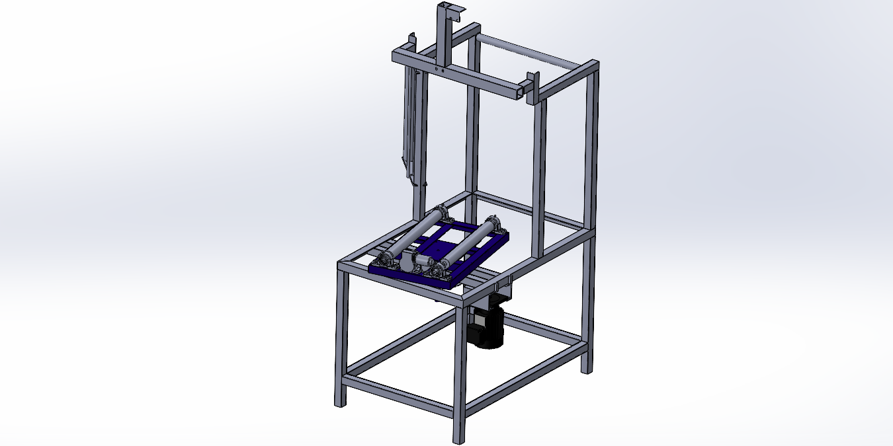

Packing Machine
Project at Toyo Kasei

Challenge
The packing process for 20 kg irrigation rolls required operators to repeatedly lift, rotate, and manually wrap each roll, creating a high‑risk environment for ergonomic injuries and significantly slowing production. The repetitive lifting and awkward postures led to fatigue, inconsistent wrapping quality, and low throughput during peak demand. The challenge was to design a system that automated the wrapping process, minimized manual handling, and ensured safe, repeatable operation without increasing operational complexity.
Solution
To address this problem, I developed a semi-automated packing machine that eliminated the need for operators to lift or reposition the roll. The system incorporated a rotary base with a fixed Z‑axis and rotating X/Y axes to allow smooth and controlled rotation of the product. A pair of servo‑driven rubber rollers provided consistent rotational speed, while a hydraulically actuated upper roller applied calibrated pressure to stabilize the roll without deforming it. The film‑feeding mechanism was designed so the operator only needed to insert the film and activate the machine, enabling a nearly hands‑free wrapping process that significantly reduced physical strain.
Engineering Process
The design process began with a full CAD model of the machine in SolidWorks, including the frame, rollers, hydraulic components, and servo‑driven mechanisms. I performed motion analysis to determine safe and efficient rotational speeds, calculating gear ratios that balanced torque, speed, and operator safety. Ergonomic task analysis and operator feedback guided the placement of controls and the reduction of manual handling steps. Structural components were sized for stiffness and manufacturability, and safety considerations such as guarding and pinch‑point mitigation were integrated into the design. Although I left the company before fabrication, the structural design and mechanical architecture were fully completed and prepared for industrial implementation.
Results
The final design reduced operator physical effort by approximately 50%, eliminated the need for repetitive lifting, and produced consistent wrapping quality through servo‑controlled rotation. The system improved workplace safety by minimizing manual handling and applying controlled pressure during operation. The machine’s design was ready for deployment, and a second phase—planned to include a scissor lift for full automation—was already outlined. Overall, the project demonstrated a strong combination of ergonomic improvement, mechanical design, and industrial feasibility.